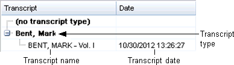
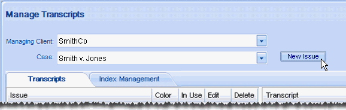

This page contains the following content:
Related pages:
In Eclipse, users can link documents to transcript annotations to provide additional information related to the transcript content. Document files can be located anywhere; when a user links a file, it is copied to a common location defined in Eclipse Administration. By default, files are copied to the Eclipse case data directory. To change the location for linked transcript documents:
Complete Get Started.
Identify the location where transcript-related documents should be stored, then complete step 3 or 4. Ensure the location is available to all Eclipse users working with transcripts.
To navigate to the needed folder: next to the
Uploaded Exhibit Path field, click
 and navigate to/select the folder.
and navigate to/select the folder.
To enter a path: click  and
type (or revise) the complete path in the Uploaded
Exhibit Path field (using UNC format).
and
type (or revise) the complete path in the Uploaded
Exhibit Path field (using UNC format).
After importing transcripts, review the Transcript list in the center portion of the Transcripts tab in the Case Management screen. Components of the list are as shown in the following figure.

If needed for consistency or clarity, change transcript details as follows:
Complete Get Started.
In the Transcript list in the center of the window, right-click the transcript to be modified and select Edit Transcript.
Change the transcript name, description, and/or date/time as needed and click OK.
Organize transcripts by type as described in the following procedure.
Transcript types allow you to group transcripts in a folder structure that appears in both Eclipse and Eclipse Administration. Each transcript type can also include subtypes, similar to a folder containing folders within it.
|
|
Tip: Multiple imported transcript files may have the same name. Use transcript types to organize such files efficiently. |
The following figure shows transcript type names in the Transcript tab in Eclipse.
To create new transcript types:
Complete Get Started.
In the Transcript list in the center of the screen, review existing transcripts and types to determine how to organize the transcripts.
Right-click in the Transcript list area (not on a specific transcript) and select Add Transcript Type(s).
Add transcript type names, one per line. When finished, click OK.
To create subtypes for a particular transcript type, right-click the type name and select Add Transcript Type. Enter the subordinate type names (one per line) and click OK.
To assign a transcript type to one or more transcripts:
If needed, create needed types as described in the previous procedure.
Complete step 3 or step 4, per your preference.
Selecting transcripts:
Select one or more transcripts in the Transcript list. For multiple transcripts, click one transcript and Shift-click or Ctrl+click additional transcripts to select a contiguous or non-contiguous set, respectively.
Right-click and select Move to Type, then select the needed type.
Selecting a transcript type:
Right-click the needed type (or subtype) and select Move Transcripts To This Type.
In the Select Transcripts dialog box, select the transcripts to move.
When finished, click OK.
|
|
Tip: Click either column heading in the Select Transcripts dialog box to sort the column and more quickly find needed transcripts. |
To change a transcript type (or subtype) name:
Access the Manage Transcripts screen as described in Create New Transcript Types.
Right-click the type (or subtype) to be changed and select Rename Transcript Type.
Change the type name as needed and click OK.
To delete a transcript type (or subtype):
Access the Transcripts tab as described in Create New Transcript Types.
If transcripts are assigned to the type, move them to another type as described in Assign Transcripts to a Type or Subtype. To be deleted, the transcript type folder must be empty.
Right-click a type (or subtype) to be deleted and select Delete Transcript Type.
In response to the confirmation message, click Yes.
Transcript issues provide a tagging mechanism that can help with transcript-related activities, such as cross-examination preparation or handling objections. Reviewers apply issues to transcripts in Eclipse. Eclipse Administration provides an easy method for importing, creating, and managing issues.
To create new issues:
Complete Get Started.
Click New Issue (to the right of the Case field):

In the Create Issue dialog box, enter an issue name and click to select an issue color.
In the Color dialog box, select a color. Alternatively, define a custom color:
Click Define Custom Colors in the Color dialog box.
Create a custom color on the color palette. For help, click the ? button.
When the color is created, click Add to Custom Colors.
When finished, click OK. New issues are added alphabetically to the Issue list in both Eclipse Administration and Eclipse.
After creating issues as described in the previous procedure, change an issue’s name and/or color as follows:
In the
Issue list, click corresponding to the
issue to be edited.
Change the name and/or color as needed. To change the color, see the previous procedure.
When finished, click OK.
|
|
Note: Issues that are in use cannot be deleted. For unused issues, be certain of your choice in the following procedure, as the issue is instantaneously deleted. |
To delete an unused issue:
In the
Issue list, locate the issue to be deleted. Unused issues include a delete
button,  .
.
Click .
The issue is deleted.
To review transcript details:
Complete Get Started.
Right-click a transcript of interest and select Properties. Details provided include:
Transcript name
Number of text lines
Number of question-answer (QA) pairs
Number of annotations that have been applied
Date of import into Eclipse
Original import file path and name
To delete transcripts:
Complete Get Started.
Complete step 3 or 4 as needed.
To delete one transcript, right-click the transcript and select Delete Transcript(s).
To delete multiple transcripts:
Click the first transcript to be deleted, then Shift+click or Ctrl+click additional transcripts to choose a contiguous or non-contiguous set, respectively.
When all transcripts are selected, right-click and select Delete Transcript(s).
In response to the warning message, click OK.